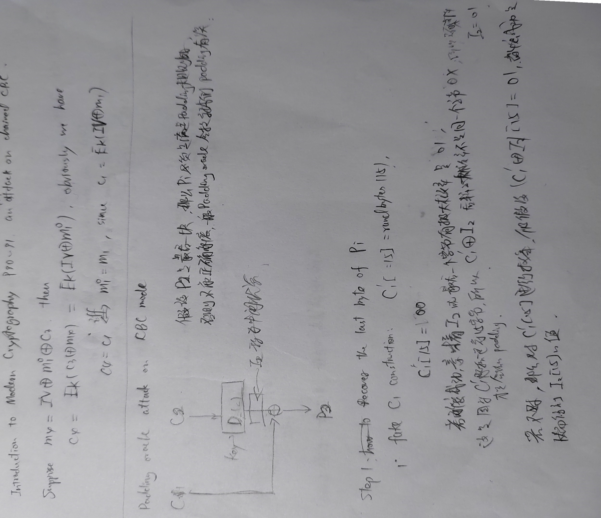

总结CBC模式下的字节翻转攻击和Padding Oracle Attack。由于时间关系，padding oracle attack的原理部分暂时上传手稿截图。
CBC模式
参考CTF Wiki即可。
除了CBC的结构需要掌握，还要知道一个很重要的结论：标准的CBC是CPA安全的，但不是CCA安全的。也就是说我们有一些选择密文攻击(Chosen Ciphertext Attack)。
字节翻转攻击(Bit Flip)
攻击条件
假设我们知道采用的加密算法和IV值，并且我们知道一个明密文对$(P_1||P_2, C_1||C_2)$。假设我们可以控制待解密的$C_1||C_2$。 （这里$A||B$表示两个连续的明/密文分组）
攻击原理和效果
我们可以伪造密文，使得解密后的明文为$P_1||A$。其中第二个明文分组$A$是我们自己随意选择的。这是因为我们有：
如果我们想伪造$P_2’ = A$，我们只需要取$C_{1}’ = C_{1} \oplus P_{2} \oplus A$。可以验证等式$P_{2}’ = D_{K}(C_{2}) \ \oplus \ C_1’$ 成立。因此$C_{1}’ || C_{2}$对应的明文确实是$P_1||A$。
可以控制IV的情况
如果我们能控制$IV$和密文值，由于$IV = C_{0}$，我们也有类似的攻击方法。考虑到
那么我们按照上面改$C_1$的方法修改$IV$即可。
Cryptohack有一个CTF题，感兴趣的可以找到它练一下。但是考虑到cryptohack的规则，我不说是哪个。
Padding Oracle Attack
以下攻击条件和攻击效果两部分基本引用了CTF Wiki - padding oracle attack中的内容。但是我在看CTF Wiki攻击原理部分的时候感觉有一些不清晰的地方，因此我还是自己手推了一下攻击原理。
攻击条件
Padding Oracle Attack 攻击一般需要满足以下几个条件
加密算法
- 采用 PKCS5/PKCS7 Padding 的加密算法。 当然，非对称加密中 OAEP 的填充方式也有可能会受到影响。
- 分组模式为 CBC 模式。
攻击者能力
- 攻击者可以拦截上述加密算法加密的消息。
- 攻击者可以和 padding oracle（即服务器） 进行交互：客户端向服务器端发送密文，服务器端会以某种返回信息告知客户端 padding 是否正常。
攻击效果
Padding Oracle Attack 攻击可以达到的效果如下
- 在不清楚 key 和 IV 的前提下解密任意给定的密文。
攻击原理
大思路是根据padding格式推出最后一个字节，然后在此基础上再考虑推出倒数第二个字节…最终发现可以对任意一个密文分组做解密。直接贴手稿图。

一些对攻击的防御
采用一些别的padding（例如One and Zeroes Padding）可以防止这个攻击，但是会有一些别的问题。参考：Securing CBC mode Against Padding Oracle Attacks
引用Cryptopals: Exploiting CBC Padding Oracles的Defenses部分
This attack is a chosen-ciphertext attack. It depends on the attacker being able to submit arbitrary ciphertexts to the oracle. As such, you can prevent the attack by authenticating your ciphertexts. You might do this by switching from CBC mode to an authenticated encryption mode like GCM or OCB; alternately, keep CBC mode but start MACing your ciphertexts using something like HMAC.
Removing the oracle would also prevent the attack. However, hopefully the example oracles above gave you some sense of how nontrivial this actually can be in practice. This is a cryptographic problem and it calls for a cryptographic solution; anything less is likely to be fragile and error-prone.
By adding authentication tags and checking them prior to decryption, we guarantee that we’ll be able to reject any attacker-crafted messages without ever decrypting them, preventing us from leaking any information at all about their decrypted contents, padding-related or otherwise.
现实中的攻击实例
- POODLE attack
Reference
Cryptohack’s CTF challenges. Symmetry category
According to the rule of cryptohack, I won’t tell you which challenge is it. Sorry about that.
Securing CBC mode Against Padding Oracle Attacks
- Cryptopals: Exploiting CBC Padding Oracles